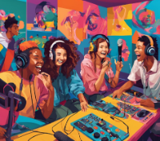

Publicamos en Onda Perillán
En esta ocasión, vamos a combinar dos mundos fascinantes: la ciberseguridad y la radio, de manera que trabajaremos sobre dos de nuestros bloques programados en la asignatura: la seguridad en internet y la producción de contenidos digitales.
Como sabéis, internet y las tecnologías digitales forman parte de vuestro día a día, pero también conllevan riesgos que es importante conocer y prevenir. Por eso, en esta tarea, os convertiréis en expertos en ciberseguridad y locutores de radio para crear un episodio que ayude a otros adolescentes como vosotros a navegar de forma segura por el mundo digital.
El género radiofónico que emplear es el de “Reportaje”. Tenéis ayuda en el siguiente documento: Género reportaje